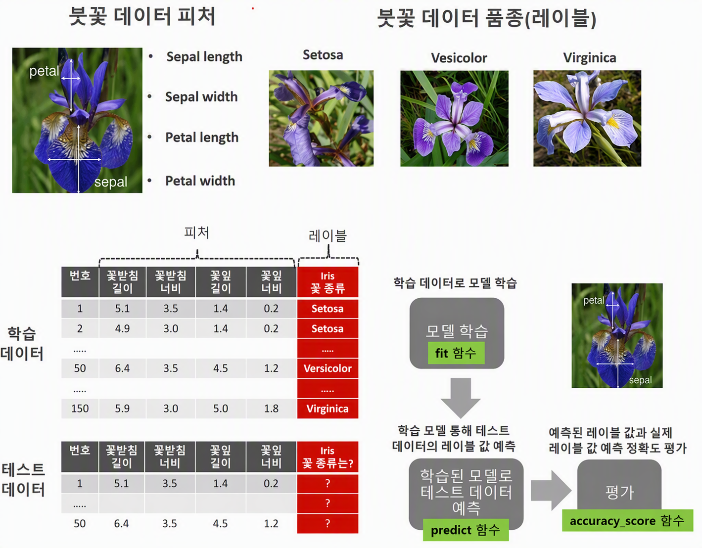

[13차시_분류] 붓꽃 품종 분류
1. Iris(붓꽃) 데이터의 특성
- 주제: 꽃받침길이, 꽃받침너비, 꽃잎길이, 꽃잎너비를 보고 붓꽃 종류를 분류해 보자.
| 구분 | 주요 내용 및 특징 |
|---|---|
| 적절한 데이터 규모 | 총 150개의 샘플과 4개 피처(꽃받침/꽃잎의 길이 및 너비)로 구성되어 초보자의 직관적 구조 이해 및 적은 컴퓨팅 연산 부담 |
| 명확한 클래스 구분 | Setosa 품종의 명확한 선형 분리 가능성으로 인하여 분류 알고리즘의 원리 및 성능 변화 확인 용이함. |
| 정제된 데이터 상태 | 결측치 및 이상치가 없는 완벽한 정제 상태로, 복잡한 전처리 과정 없이 분류 알고리즘 학습 및 평가에 집중 가능함. |
| 역사적 표준성 | 1936년 통계학자 피셔(Fisher)에 의해 도입된 후 대표적 벤치마크 데이터셋으로 자리 잡아 다양한 알고리즘 간 비교 학습에 최적화됨. |
1.1. Iris Dataset의 개요
- 꽃받침 : Sepal
- 꽃잎 : Petal
- 붓꽃 종류 : Setosa, Versicolor, Virginica


| 구분 | 항목 | 내용 |
|---|---|---|
| 피처 (Feature) | 입력 데이터 항목 | 꽃받침 길이(Sepal length), 꽃받침 너비(Sepal width), 꽃잎 길이(Petal length), 꽃잎 너비(Petal width) |
| 레이블 (Label) | 타겟 클래스 (품종) | Setosa, Versicolor, Virginica |
| 데이터 구성 | 학습 데이터, 테스트 데이터 | 모델 학습을 위한 피처 및 레이블 데이터 세트, 모델 예측용 피처 데이터 세트 |
| 모델 학습 | fit 함수 | 학습 데이터를 활용한 분류 모델 학습 수행 |
| 테스트 및 예측 | predict 함수 | 학습된 모델 기반 테스트 데이터의 레이블 값 예측 |
| 성능 평가 | accuracy_score 함수 | 예측된 레이블 값과 실제 레이블 값 비교를 통한 예측 정확도 평가 |
1.2. 사이킷런 모듈 불러오기
!pip install koreanize-matplotlib
import numpy as np
import pandas as pd
import matplotlib.pyplot as plt
import koreanize_matplotlib
# 결정 트리 알고리즘 사용하기
from sklearn.tree import DecisionTreeClassifier, plot_tree
# SVC 알고리즘 사용하기
from sklearn.svm import SVC
# KNN 알고리즘 사용하기
from sklearn.neighbors import KNeighborsClassifier
# 학습 데이터와 테스트 데이터 분리하기
from sklearn.model_selection import train_test_split
# seaborn으로 그래프 표현하기
import seaborn as sns
# 분류모델 성능 평가
from sklearn.metrics import confusion_matrix, classification_report, accuracy_score, precision_score, recall_score, f1_score | pip 설치 이름 | import 호출 이름 |
|---|---|
scikit-learn | import sklearn |
koreanize-matplotlib | import koreanize_matplotlib |
| 모듈 및 함수명 | 역할 및 설명 |
|---|---|
sklearn.metrics | 모델 성능 평가에 필요한 다양한 지표 함수를 포함하는 모듈임. |
confusion_matrix | 실제값과 예측값의 일치 여부를 표(행렬) 형태로 정리한 혼동 행렬을 생성함. |
classification_report | 정밀도, 재현율, F1 점수 등의 평가지표를 한눈에 확인하는 종합 보고서를 출력함. |
accuracy_score | 전체 예측 중 정답을 맞춘 비율인 정확도를 계산함. |
precision_score | 모델이 '양성'으로 예측한 것 중 실제 '양성'인 비율인 정밀도를 산출함. |
recall_score | 실제 '양성' 데이터 중 모델이 '양성'으로 맞춘 비율인 재현율을 산출함. |
f1_score | 정밀도와 재현율의 조화평균값인 F1 점수를 산출함 (클래스 불균형 데이터 평가에 유용함). |
1.3. Iris 데이터 5개 출력
- df 변수명 사용하기
- read_csv( ): csv 파일을 DataFrame으로 로딩하기.
[코드 입력 01]


1.4. 데이터 프레임의 요약 정보 확인
[코드 입력 02]

<class 'pandas.core.frame.DataFrame'>
RangeIndex: 150 entries, 0 to 149
Data columns (total 5 columns):
# Column Non-Null Count Dtype
--- ------ -------------- -----
0 sepal length 150 non-null float64
1 sepal width 150 non-null float64
2 petal length 150 non-null float64
3 petal width 150 non-null float64
4 species 150 non-null object
dtypes: float64(4), object(1)
memory usage: 6.0+ KB
1.5. pairplot 함수: 데이터간 상관관계
| 구분 | 상세 설명 |
|---|---|
| 특징 | 수치형(Numeric) 변수 쌍의 관계를 한눈에 비교함. |
| 대각선 | 히스토그램 그래프로 표현되어 해당 변수의 분포를 보여줌. |
| 비대각선 | 서로 다른 변수끼리 만나는 지점에는 산점도(Scatter Plot)가 그려짐. |
| 상관관계 | • 높은 상관관계: 점들이 일정 방향(직선/대각선 형태)으로 뾰족하고 좁게 모여 있음. • 낮은 상관관계: 점들이 특정 방향 없이 넓고 둥글게 퍼져 있음. |
[코드 입력 03]


| 구분 | 1. 품종별 분리 특성 | 2. 변수별 기여도 및 상관성 | 3. 분류 모델링 관점의 의미 |
|---|---|---|---|
| Setosa (파란색) | • 다른 두 품종과 완전히 격리된 독립적 분포 형성 • 꽃잎 길이 및 너비가 매우 작은 영역에 밀집함. | • 모든 변수 조합에서 명확한 군집 분리 형성 • 단일 변수 분포만으로도 완벽한 경계선 구획 가능 | • 단순 임계값(Threshold) 조건문만으로 100% 분류 가능함. • 모델 학습 시 가장 오분류율이 낮은 클래스임. |
| Versicolor (주황색) Virginica (초록색) | • 두 품종 간 특성값 경계선이 서로 접하고 일부 겹침. • Setosa에 비해 전체적인 치수가 상대적으로 큼 | • petal length와 petal width 간 강한 양의 선형 상관관계 형성함.• sepal 변수 대비 petal 변수에서 두 품종 간 분리도가 상대적으로 높음. | • 단일 변수 구분은 불가하며, petal 계열 변수의 조합 활용이 필수적임.• 선형, 비선형 머신러닝 알고리즘(SVM, Decision Tree 등) 적용 필요함. |
| 구분 | 그래프 유형 | 대상 변수 | 주요 목적 및 특징 |
|---|---|---|---|
| 대각선 영역 | 히스토그램 | 단일 변수 (X축 = Y축) | • 자기 자신과의 비교 시 산점도()의 무의미함 보완 • 해당 단일 변수 데이터의 구간별 집중도 및 값의 분포 파악 |
| 비대각선 영역 | 산점도 (Scatter Plot) | 서로 다른 두 변수 (X축 ≠ Y축) | • 두 변수 간의 상관관계(양/음) 및 데이터 군집 형태 파악 • 값의 분포 패턴 및 경향성 분석 |
1.6. 피처 데이터와 레이블 데이터 분리
[코드 입력 04]

1.7. 학습 데이터와 테스트 데이터 분리
1.7.1. train_test_split
[코드 입력 05]

- test_size=0.2: 학습 데이터: 80%, 테스트 데이터: 20%
- random_state=11: 수행결과가 항상 일치하기 위해 주어진 난수 값을 사용함.
- stratify=데이터를 학습용(Train)과 테스트용(Test)으로 나눌 때, 타겟 값(레이블)의 분포 비율이 원본과 동일하게 유지되도록 강제함.
- 피처 데이터가 2차원(n * m)인 이유
여러 개의 특성을 가진 여러 개의 샘플을 표현하기 위한 행렬 구조
- 레이블 데이터가 1차원(n * 1)인 이유
각 샘플에 대응하는 단 하나의 정답 값
1.8. 피처 샘플 출력
[코드 입력 06]


1.9. 결정값 샘플 출력
[코드 입력 07]


1.10. 의사결정트리, 서포트벡터머신(SVM), K-최근접 이웃(KNN)
- 주요 하이퍼 파라미터의 값을 적절하게 변경하면서 예측 정확도 평가를 높이기
1.10.1. DecisionTreeClassifier
[코드 입력 08]

- dt_clf = DecisionTreeClassifier(random_state=11, max_depth=5, min_samples_split=3, min_samples_leaf=2)
- max_depth: 트리의 최대 깊이, 기본값:None
- min_samples_split: 노드를 분할하기 위한 최소한의 샘플 데이터 수, 기본값:2
- min_samples_leaf: 단말 노드가 되기 위한 최소한의 샘플 데이터 수, 기본값:1
- max_leaf_nodes: 단말 노드의 최대 개수, 기본값:None
- verbose: 1이면 학습과정을 확인 가능, 기본값: 0
| 구분 | dt | dt_clf |
|---|---|---|
| 트리 최대 깊이 ( max_depth) | 3 (3단계까지 분할) | 5 (5단계까지 분할) |
노드 분할 최소 샘플 수 (min_samples_split) | 2(기본값 적용) | 3 (최소 3개의 데이터) |
| 난수 고정 ( random_state) | 11 (동일한 결과) | 11 (동일한 결과) |
| 모델의 복잡도 | 상대적으로 단순 (과적합 위험 낮음) | 상대적으로 복잡 (더 세밀하게 학습함) |
1.10.2. SVC
[코드 입력 09]

- SVM (Support Vector Machine): 서포트 벡터를 이용한 알고리즘 전체를 통칭하는 용어.
- SVC (Support Vector Classification): SVM 알고리즘을 분류(Classification) 목적의 구현체.
- 결정 경계 종류:
1. 방사기저함수-무한한 차원의 점으로 변환(kernel='rbf'), 기본값
2. 선형-2차원-선(kernel='linear')
3. 다항식-다차원-평면(kernel='poly')
4. 시그모이드(kernel='sigmoid')
- C파라미터 값이 적을수록 소프트마진(마진이 커짐, 오차를 허용)
C파라미터 값이 클수록 하드마진(마진이 작아짐, 오차를 허용하지 않음)
- gamma값이 적을수록 결정 경계를 직선에 가깝게 그음.
- gamma값이 클수록 학습 데이터에 많이 의존해서 결정 경계를 구불구불 그음. 기본값: 자동
- degree 파라미터: kernel='poly'인 경우 차원을 나타냄.(ex. degree=4). 기본값: 3차원
1.10.3. KNeighborsClassifier(참고할 이웃의 수)
[코드 입력 10]

- n_neighbors: 참고할 이웃의 수 k를 설정, 기본값: 5
2. fit 함수: 학습 데이터로 ‘학습’(Train)하기
- 학습용 피처 데이터와 학습용 결정값을 가지고 학습 수행하기
[코드 입력 11]


2.1. predict함수: 테스트 데이터로 ‘예측’(Predict)하기
- 학습이 완료된 ML 알고리즘 객체에서 테스트용 피처 데이터로 예측 수행 후 예측 결과값 반환하기
[코드 입력 12]

2.2. 테스트 데이터로 예측 정확도 출력
- classification_report( )

| 구분 | 클래스 (Class) | 실제 샘플 수 (support) | 예측 결과 분포 (혼동 행렬) | 정밀도 (precision) | 재현율 (recall) | F1 점수 (f1-score) | 성능 해석 및 오분류 원인 |
|---|---|---|---|---|---|---|---|
| 완벽 분류 | 1번 | 8개 | 1번으로 8개 예측 | 1.00 | 1.00 | 1.00 | 오분류 없이 100% 완벽하게 예측함. |
| 4번 | 3개 | 4번으로 3개 예측 | 1.00 | 1.00 | 1.00 | 오분류 없이 100% 완벽하게 예측함. | |
| 6번 | 2개 | 6번으로 2개 예측 | 1.00 | 1.00 | 1.00 | 오분류 없이 100% 완벽하게 예측함. | |
| 7번 | 2개 | 7번으로 2개 예측 | 1.00 | 1.00 | 1.00 | 오분류 없이 100% 완벽하게 예측함. | |
| 지표 하락 | 2번 | 4개 | 2번으로 4개 예측 | 0.67 | 1.00 | 0.80 | 실제 2번은 모두 맞혔으나, 3번과 5번 데이터가 2번으로 잘못 들어와 정밀도가 낮아짐. |
| 분류 실패 | 3번 | 1개 | 2번으로 1개 오분류 | 0.00 | 0.00 | 0.00 | 샘플 수가 부족하여 모델이 2번 클래스로 잘못 예측함. |
| 5번 | 1개 | 2번으로 1개 오분류 | 0.00 | 0.00 | 0.00 | 샘플 수가 부족하여 모델이 2번 클래스로 잘못 예측함. | |
| 종합 성능 | 전체 (Total) | 21개 | 정답 19개 / 오답 2개 | 0.84 (weighted) | 0.90 (weighted) | 0.90 (Accuracy) | 전체 정확도는 90%로 우수하나, 데이터 수가 적은 클래스(3, 5번)의 예측 취약성이 존재함. |
[코드 입력 13]


2.3. 결정 트리 모델 시각화(Decision Tree Visualization)
[코드 입력 14]


2.4. predict함수: 예측 수행
- 입력형식(실수를 콤마로 구분하여 입력): 5.0,4.0,1.3,0.2
[코드 입력 15]


[코드 입력 16]

| 구분 | 단순 리스트 입력 ([predicted_data]) | 데이터프레임 입력 (input_df) |
|---|---|---|
| 특성 이름 유무 | 없음 | 있음 (columns=[...]) |
| 경고 출력 여부 | 경고(UserWarning) 발생 | 경고 없이 깔끔하게 실행 |
2.5. [추가 실습]
아래의 세트 값을 차례로 모두 입력해서 예상 품종을 확인해 봅니다.
모두 입력 후 확인한 사람은 선생님께 확인을 받습니다.
| 세트 | 입력값 (실수를 콤마로 구분) | 예상 품종 (Label) | 비고 |
|---|---|---|---|
| 1 | 5.1,3.5,1.4,0.2 | Setosa | 전형적인 Setosa 데이터 |
| 2 | 4.9,3.0,1.4,0.2 | Setosa | 꽃잎이 매우 작고 짧음 |
| 3 | 4.7,3.2,1.3,0.2 | Setosa | 꽃잎이 매우 작고 짧음 |
| 4 | 7.0,3.2,4.7,1.4 | Versicolor | 전형적인 Versicolor 데이터 |
| 5 | 6.4,3.2,4.5,1.5 | Versicolor | 꽃잎 길이가 중간 수준 |
| 6 | 5.5,2.3,4.0,1.3 | Versicolor | 꽃받침이 얇은 Versicolor |
| 7 | 6.3,3.3,6.0,2.5 | Virginica | 전형적인 Virginica 데이터 |
| 8 | 5.8,2.7,5.1,1.9 | Virginica | 꽃잎이 크고 두꺼움 |
| 9 | 7.7,3.8,6.7,2.2 | Virginica | 전체적인 치수가 매우 큼 |
| 10 | 6.0,2.2,4.0,1.0 | Versicolor | 경계선상에 위치한 데이터 |